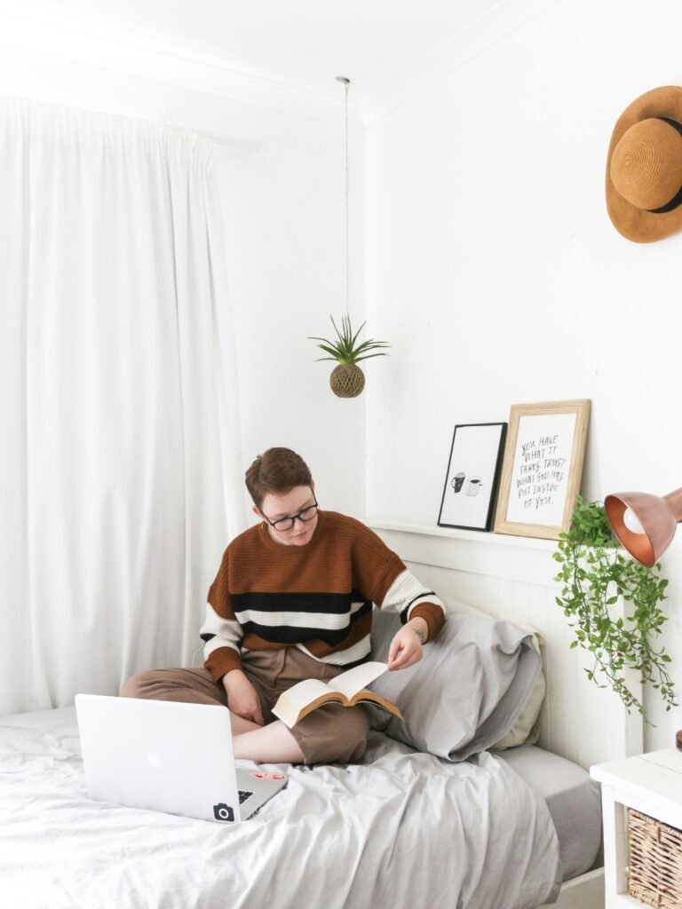
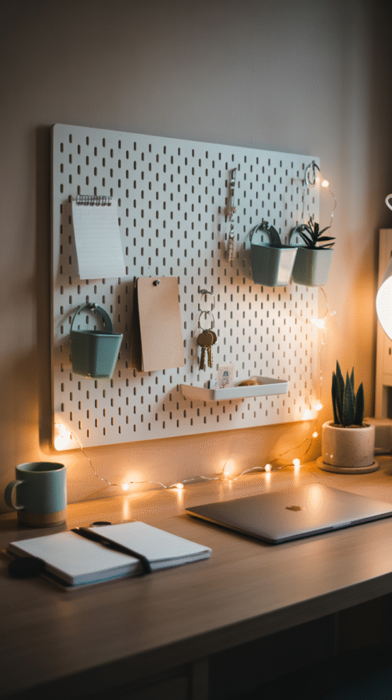
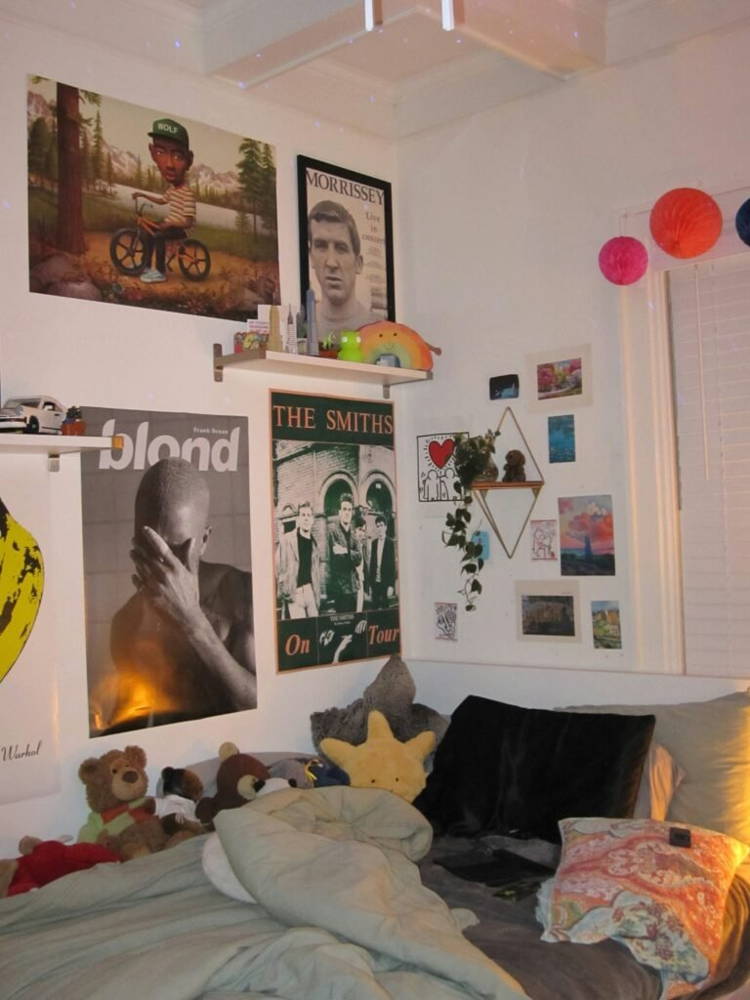
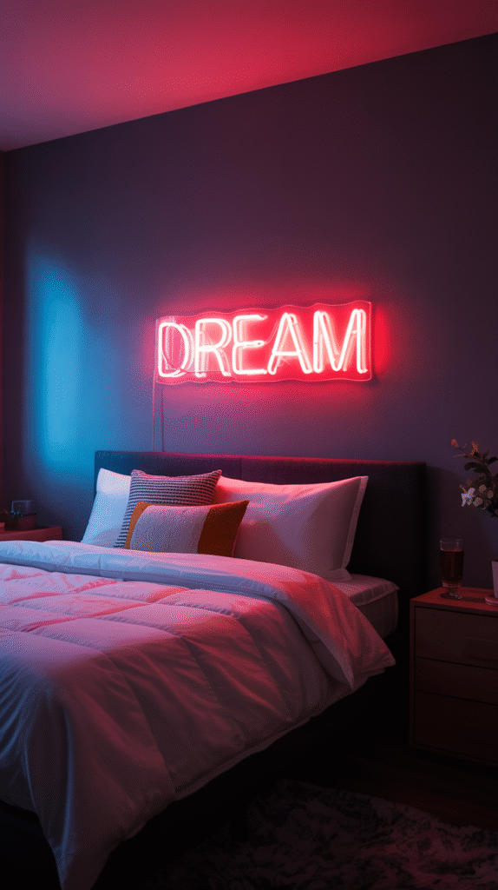
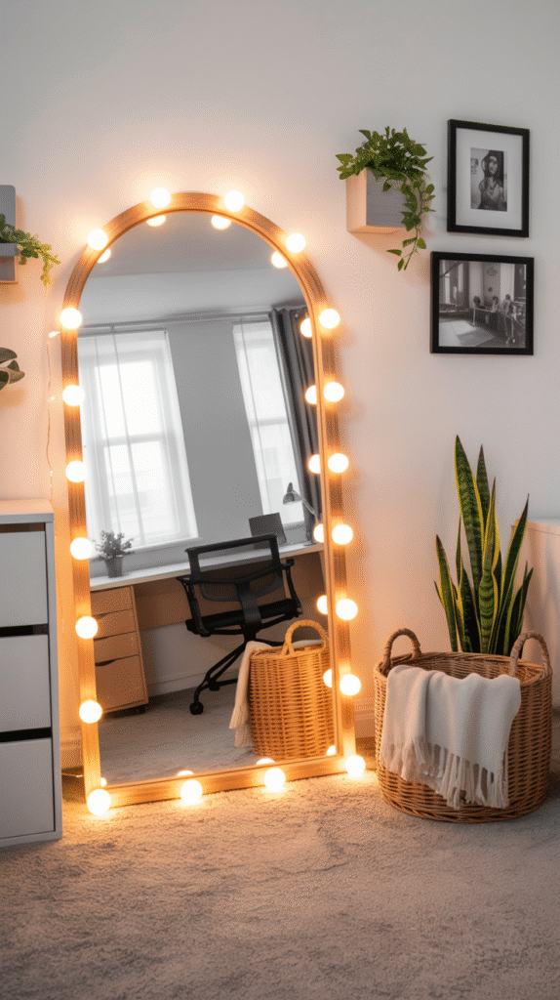
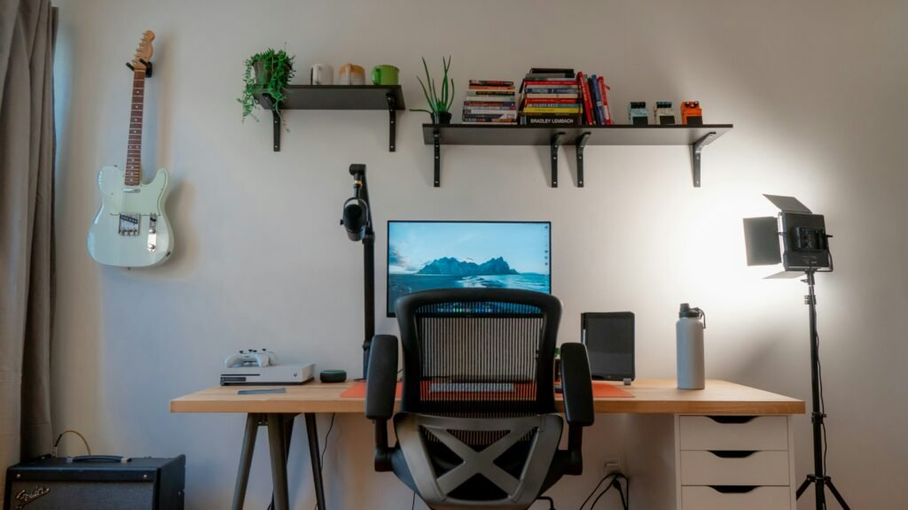
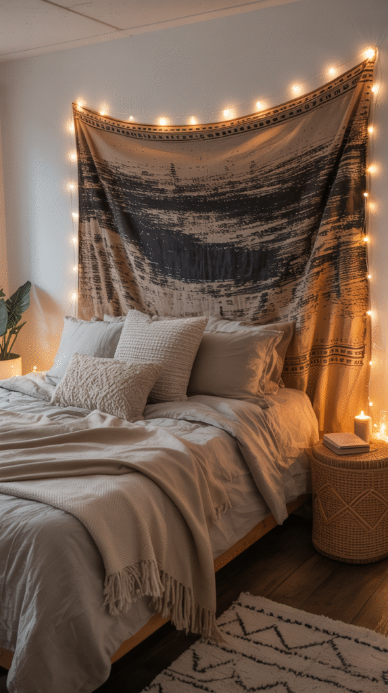
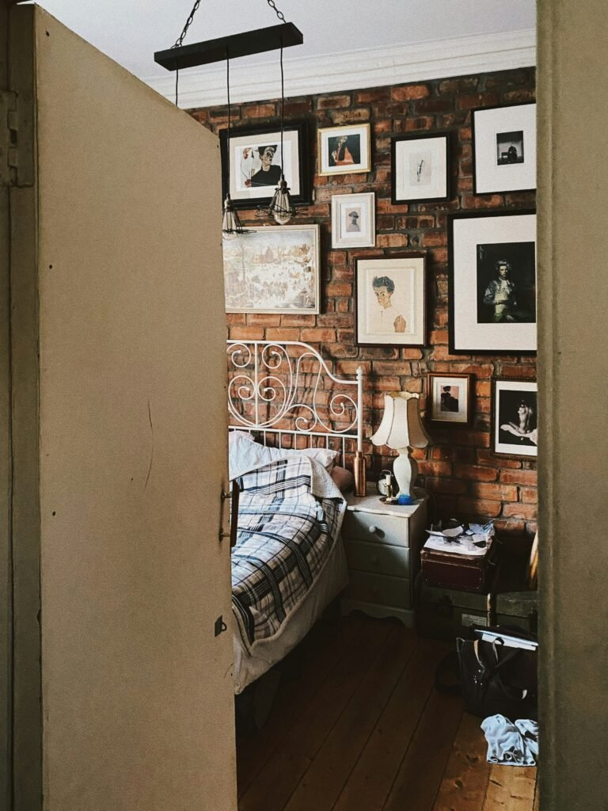

A dorm room starts out as a blank box with fluorescent lighting and a whole lot of beige, and it is genuinely wild how fast that can change with the right wall decor. You don't need a design degree or a big budget, just a handful of ideas that actually hold up to a full semester of use.
The rooms that work aren't necessarily the most expensive ones. They're the ones that feel specific to the person living there.
Here are ten approaches worth trying, from the five-minute fixes to the ones worth a little more planning.
Most of these were built around one real constraint: you probably can't paint, can't drill more than a couple of small holes, and definitely can't afford to lose your deposit over a wall that got a little too ambitious.

Layer It, Don't Pile It On
The difference between "aesthetic" and "chaotic" usually comes down to one thing: layering with intention instead of just adding more.
Start with one anchor piece, a tapestry, a large print, a neon sign, and build outward from there. A workable formula is three layers: one large focal item as your base, medium pieces like framed art or a small shelf in the middle, and small accents like fairy lights or mini prints on top.
And don't skip lighting. Warm string lights or a soft LED strip do roughly half the work of making a plain dorm wall feel considered rather than just filled in.

Finding Your Direction Before You Buy Anything
Before the shopping cart fills up with fairy lights and posters, it helps to actually name your style first. Cozy and boho leans into woven hangings and soft palettes. Clean and minimal wants abstract line art and monochrome frames. Bold and maximalist wants mixed prints, color, and zero hesitation about covering every inch.
None of these are wrong. Knowing which one you're going for before you buy anything is what prevents the dreaded "my wall looks like a mood board that lost an argument with itself" situation.
Two practical rules no matter which direction you pick: use removable everything (command strips, lightweight hooks), and let a little of the decor be functional, a pegboard or cork strip above a desk looks just as good as it works.
Why Your Walls Deserve the Effort
You spend a huge amount of time staring at these four walls, studying, scrolling, having late-night conversations about your major. There's no good reason they shouldn't look like you.
Good wall decor does three specific things: it sets the tone of the room (cozy, artsy, minimal, whatever you're going for), it affects your actual mood through color and texture, and it shows off your personality even when your half of the room is five feet wide.
The dorm itself is temporary. How the room makes you feel while you're in it isn't.
10 Dorm Wall Decor Ideas
1. A Pegboard That Looks Good and Actually Works
This is the one that gets filed under decor and organization at the same time. A pegboard holds everything from photos to keys to a tiny plant, and somehow looks styled while doing it.
Think of it as a command center for your wall: clip notes, hang a small basket for odds and ends, display a postcard or two. It's function and personality sharing one spot, which is exactly what a dorm wall needs to be doing.
Go with black, white, or a warmer metal tone depending on your room's palette, and don't skip the fairy lights along the bottom edge, it's a small touch that makes the whole setup look finished.

2. One Statement Poster, Properly Sized
A single oversized print is the low-effort cousin of the gallery wall, one strong piece can anchor an entire room without you hanging a dozen smaller ones.
Band posters, movie prints, a framed album cover, whatever genuinely reflects your taste works better here than something generic. A cluster of posters that clearly belongs to one specific person's taste reads very differently than a showroom wall.
Keep the surrounding wall fairly neutral so the piece actually pops, use removable poster strips, and don't be afraid to swap it out whenever your taste shifts.

3. A Neon Sign for Instant Personality
Few things say "this is a dorm room" as fast as a neon sign, and that's exactly the appeal, it's bold, a little cheeky, and entirely a mood.
A single word in a minimalist script does plenty of work on its own. A full custom phrase in your favorite font goes a step further if you want something more specific to you.
The one rule: balance it against everything else in the room. If your gallery wall is already busy, let the neon sign be the one quiet exception. If your walls are otherwise simple, let it be the whole statement.

4. A Mirror That Pulls Double Duty as Art
Decorative mirrors are quietly one of the smartest moves for a small dorm room, they bounce light around and make the whole space read bigger.
Pick an interesting shape, an arch, an irregular curve, a sunburst, and it stops being purely functional and starts counting as wall art too.
A small round mirror above a desk creates an easy focal point. A larger one looks great simply propped against the wall. Either way, ringing it with lights turns it into the room's actual centerpiece.

5. A Photo Collage That Grows With the Semester
Photo collage walls cycle back into style every single year for a reason, they're personal, cheap, and never really finished, which is part of the appeal.
Pick a loose color scheme (warm neutrals, cool tones, a consistent film filter) so the wall reads as one piece rather than a scattered pile of prints. Double-sided removable tape makes rearranging painless whenever you add new photos.
Mix in a few quote prints or magazine clippings for variety, and don't worry about it ever being "done." A collage that keeps growing is kind of the whole point.
6. Floating Shelves That Do Double Duty
Mini wall shelves are the rare dorm item that's both decorative and genuinely useful, which is why they're worth reaching for constantly.
Use them to display a few framed prints, a small plant, or a candle, or treat them as overflow storage if your desk is already maxed out.
Keep two or three shelves in a matching finish, vary the height of what's on them, and resist the urge to fill every inch. A shelf that's half-empty often looks more intentional than one that's packed.

7. Peel-and-Stick Decals for Zero-Commitment Style
If you want a design moment without a single hole in the wall, decals are the most underrated option on this list.
They've come a long way from cartoon flowers, too, think geometric shapes, botanical silhouettes, or a quote in a genuinely nice font. Done well, a cluster of oversized leaf decals behind a bed can read like a mural, minus the multi-day project.
Go matte for a painted-on look, keep them to a single wall so the effect doesn't get diluted, and pair them with a small shelf nearby for a bit of dimension.
8. Fairy Lights, Used With a Little Intention
Harsh overhead dorm lighting has never done anyone's mood any favors. Fairy lights fix that in about ten minutes.
Warm-toned strands make a room feel instantly cozier, while color-changing LEDs bring a more playful, late-night-study-session energy. The honest recommendation is to use both, fairy lights for ambient glow, an LED strip tucked behind the bed or desk for accent color.
Hang a strand behind a sheer curtain for a soft, diffused glow, or run one along the ceiling line. A remote-controlled color setting is a small splurge that earns its keep fast.
9. A Tapestry That Covers the Boring Stuff Fast
Nothing covers dull cinderblock faster than a tapestry, which is exactly why they've become dorm-room royalty.
A boho pattern brings instant warmth; an abstract one leans more modern. Either way, a tapestry is light enough to hang with a couple of removable hooks, no drilling, no drama, no losing your deposit.
Drape a string of fairy lights around the edges once it's up, and it stops looking like a dorm wall and starts looking like somewhere you'd actually want to study.

10. A Gallery Wall That's Actually About You
A gallery wall is still the fastest way to make a dorm wall look designed, even with zero design background.
Treat it like a visual diary rather than a strict grid. Mix art prints, postcards, a motivational quote, whatever actually means something to you. Varying the frame sizes and finishes keeps it feeling curated instead of accidental, whether you arrange everything symmetrically or let it sprawl a little.
Stick to three or four colors so it reads as one collection, include at least one genuinely personal object, and use removable strips for every single piece. Future you, packing up at the end of the semester, will be grateful.

A Few Things Worth Avoiding
- Covering every inch. A wall that's completely full stops reading as styled and starts reading as cluttered.
- Skipping lighting entirely. Harsh overhead light undoes a surprising amount of otherwise good styling.
- Mixing aesthetics that don't talk to each other. A boho tapestry and a neon sign can coexist, but it takes a plan, not an accident.
- Leaving out anything personal. Trendy and soulless is still soulless. Add the one object that's actually yours.
Plan your layout with painter's tape before you commit to anything permanent, mix horizontal and vertical elements for flow, and don't be afraid to rearrange mid-semester. A wall that evolves a little stays more interesting than one you finished in September and never touched again.
A Simple Formula If You Want One
After all that, here's the three-step version that works almost every time. Pick a focal point first, one wall or one standout piece that anchors the room, and leave it uncluttered. Add texture and warm lighting next, since that's what gives a flat dorm wall actual depth. Then personalize the smaller gaps with photos, notes, or souvenirs, that's the layer that turns a room into your room.
Leave some breathing space throughout. You don't need to fill every inch for the styled parts to stand out, empty space is usually what makes them read as intentional in the first place.
Final Thoughts
Dorm wall decor was never really just about how the room looks in photos. It's about building a space that feels like yours when you're living hundreds of miles from the place that used to hold that title.
Whatever direction you lean, cozy neutrals, bold neon, a wall that's somehow all three, the goal is the same: a room that makes you smile a little every time you walk in.
Pick one idea from this list and start there tonight. The rest of the room will catch up.
Nobody gets the wall perfect on move-in day, and that's fine. The best dorm rooms are usually the ones that kept evolving well past the first week.